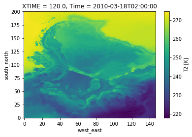
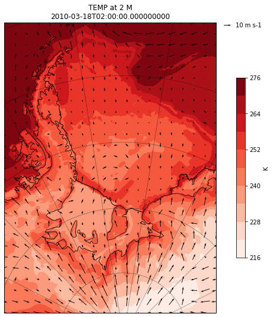

This page demonstrates how you can read in and work with output from the Weather Research and Forecasting (WRF) model
For more information on the python packages used in this notebook, see:
- wrf-python
- Once the WRF data is in an Xarray DataArray there are additional tools you can use to process the data, see here
from netCDF4 import Dataset
import wrf
import xarray as xr
import numpy as np
import cartopy.crs as crs
import matplotlib
from matplotlib.cm import get_cmap
import matplotlib.pyplot as plt
import cartopy.feature as cfe
%matplotlib inlineGetting started - simply reading a variable from a wrfout file and producing a quick plot
root_dir = '/data/fiss_aic/WRF/runA_2010'
nc = Dataset(root_dir+'/wrfout_d02_2010-03-18_00:00:00')
# t2 = wrf.getvar(nc, 'T2', timeidx=wrf.ALL_TIMES)
t2 = wrf.getvar(nc, 'T2', timeidx=2) # extract 3rd time instance (t=2) - slow....
t2<xarray.DataArray 'T2' (south_north: 201, west_east: 147)>
array([[245.5202 , 245.26236, 245.24707, ..., 222.38908, 221.92421, 221.39389],
[244.88438, 244.30995, 244.07245, ..., 222.51459, 222.09602, 221.68324],
[244.3348 , 243.89217, 243.62329, ..., 222.74355, 222.32124, 221.93173],
...,
[274.37607, 274.21396, 274.08795, ..., 272.44116, 272.42374, 272.40744],
[274.41467, 274.26974, 274.14963, ..., 272.53183, 272.51157, 272.48935],
[274.47107, 274.3663 , 274.2573 , ..., 272.62482, 272.60464, 272.5752 ]],
dtype=float32)
Coordinates:
XLONG (south_north, west_east) float32 -123.254684 ... -28.57109
XLAT (south_north, west_east) float32 -78.73641 -78.8672 ... -60.162468
XTIME float32 120.0
Time datetime64[ns] 2010-03-18T02:00:00
Dimensions without coordinates: south_north, west_east
Attributes:
FieldType: 104
MemoryOrder: XY
description: TEMP at 2 M
units: K
stagger:
coordinates: XLONG XLAT XTIME
projection: PolarStereographic(stand_lon=-45.0, moad_cen_lat=-75.499992...
# Quick Plot to check all is well
t2.plot()
# see below for manually setting up your plots
Contour Plots
# select one time instance if you have retrieved ALL_TIMES
# t2 = t2.isel(Time=1)
# Get the latitude and longitude points (use original data, rather than any processed data)
lats, lons = wrf.latlon_coords(t2)
# Get the cartopy mapping object (use original data, rather than any processed data)
cart_proj = wrf.get_cartopy(t2)
# Create a figure
fig = plt.figure(figsize=(12,9))
# Set the GeoAxes to the projection used by WRF
ax = plt.axes(projection=cart_proj)
# Add coastlines
ax.coastlines('50m', linewidth=0.8)
ax.add_feature(cfe.NaturalEarthFeature('physical', 'antarctic_ice_shelves_lines',
'50m', linewidth=1.0, edgecolor='k', facecolor='none') )
# Plot contours
plt.contourf(wrf.to_np(lons), wrf.to_np(lats), wrf.to_np(t2), 10,
transform=crs.PlateCarree(), cmap=get_cmap("Reds"))
# Add a color bar
cbar = plt.colorbar(ax=ax, shrink=.62)
cbar.set_label(t2.units)
# Set the map limits. Not really necessary, but used for demonstration.
ax.set_xlim(wrf.cartopy_xlim(t2))
ax.set_ylim(wrf.cartopy_ylim(t2))
# Add the gridlines
ax.gridlines(color="black", linestyle="dotted")
plt.title(t2.description+'\n'+str(t2.Time.values))
print('')Wind Vectors Plots
WARNING: These can be tricky to correctly produce as the U/V vectors related to the WRF grid, where as we want to plot vectors on a lon/lat grid
It is always worth checking that what you produce is sensible, e.g., by visually comparing to ERA-Interim
u10 = wrf.getvar(nc, 'U10', timeidx=2)
v10 = wrf.getvar(nc, 'V10', timeidx=2)
nx = nc.dimensions['west_east'].size
ny = nc.dimensions['south_north'].size
dt, dx, dy = nc.DT, nc.DX, nc.DY
cen_lat, cen_lon = nc.CEN_LAT, nc.CEN_LON
truelat1, truelat2, STAND_LON = nc.TRUELAT1, nc.TRUELAT2, nc.STAND_LON
pole_lat, pole_lon = nc.POLE_LAT, nc.POLE_LON
### Create earth-rotated Dataset
# https://wrf-python.readthedocs.io/en/latest/user_api/generated/wrf.uvmet.html
cone = 1 # ???
uv = wrf.uvmet(u10, v10, u10.XLONG, u10.XLAT,
cen_lon, cone, meta=True, units='m s-1')
uv<xarray.DataArray 'uvmet' (u_v: 2, south_north: 201, west_east: 147)>
array([[[ 2.239094, 2.302225, ..., -12.55818 , -12.089126],
[ 2.291526, 2.378221, ..., -12.788332, -12.442628],
...,
[ -1.114753, -1.400135, ..., -6.202898, -5.938962],
[ -1.45267 , -1.797253, ..., -6.033195, -5.793626]],
[[ -9.118709, -9.118726, ..., -3.944864, -3.652274],
[ -9.197542, -9.128673, ..., -4.285994, -3.985036],
...,
[ 6.791636, 6.390002, ..., -4.919767, -4.815777],
[ 6.969695, 6.530435, ..., -5.209907, -5.115947]]], dtype=float32)
Coordinates:
* u_v (u_v) <U1 'u' 'v'
Dimensions without coordinates: south_north, west_east
Attributes:
units: m s-1
description: earth rotated u,v
fig = plt.figure(figsize=(12,9))
# Set the GeoAxes to the projection used by WRF
cart_proj = wrf.get_cartopy(t2)
ax = plt.axes(projection=cart_proj)
# Add coastlines
ax.coastlines('50m', linewidth=0.8)
ax.add_feature(cfe.NaturalEarthFeature('physical', 'antarctic_ice_shelves_lines', '50m',
linewidth=1.0, edgecolor='k', facecolor='none'))
# Plot the wind speed as a contour plot
plt.contourf(wrf.to_np(lons), wrf.to_np(lats), wrf.to_np(t2), 10,
transform=crs.PlateCarree(), cmap=get_cmap("Reds"))
# Add a color bar
cbar = plt.colorbar(ax=ax, shrink=.62)
cbar.set_label(t2.units)
# Set the map limits. Not really necessary, but used for demonstration.
ax.set_xlim(wrf.cartopy_xlim(t2))
ax.set_ylim(wrf.cartopy_ylim(t2))
# Add the gridlines
ax.gridlines(color="black", linestyle="dotted")
plt.title(t2.description+'\n'+str(t2.Time.values))
# Add arrows to show the wind vectors !!!!
x = u10.XLONG.values
y = u10.XLAT.values
u = uv[0].values
v = uv[1].values
Q = plt.quiver( x, y, u, v,
pivot='middle',
transform=crs.PlateCarree(),
regrid_shape=20
)
### plot quiver key
qk = plt.quiverkey(Q,
1.07, 0.99, # x,y label position
10, str(10)+' '+u10.units, # choose units + update string
labelpos='E', # add label to the right
coordinates='axes'
)